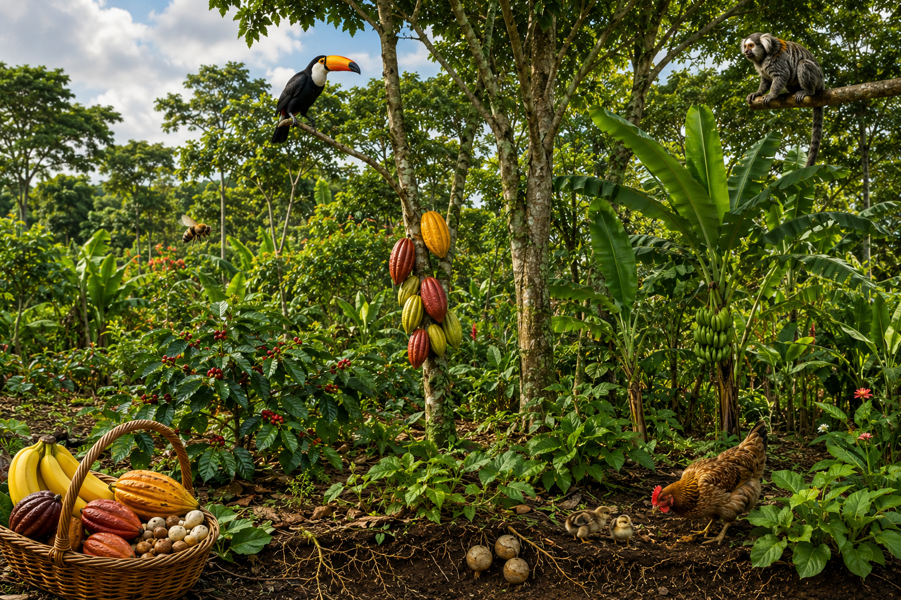
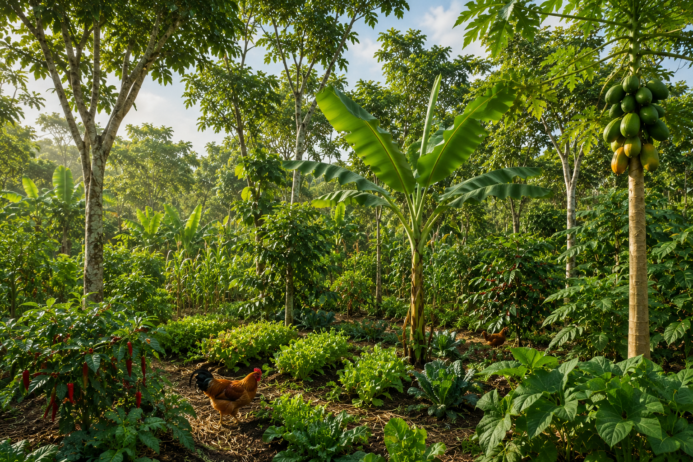
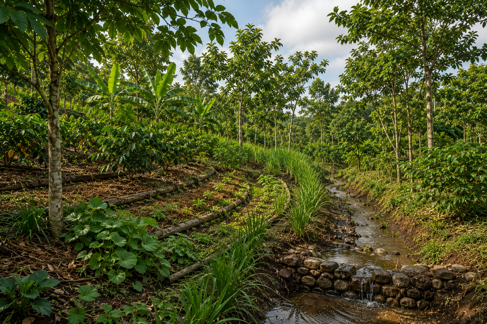

Educação Ambiental e Sustentabilidade
Como produzir alimentos sem destruir a natureza?
Descubra como os sistemas agroflorestais unem agricultura, biodiversidade e desenvolvimento sustentável.
Galeria Visual



Diagnóstico
Quais desafios motivam o uso dos sistemas agroflorestais?
Desafio Interativo
Você consegue identificar as práticas mais sustentáveis para uma propriedade rural?
Panorama Geral
Impactos da Agrofloresta
Casos e Exemplos Reais
Conteúdo Multimídia
Soluções Sustentáveis
Perguntas Frequentes
Reflexão Final
Como você aplicaria os princípios da agrofloresta em sua comunidade?
Pequenas ações podem transformar a produção agrícola e proteger os recursos naturais para as futuras gerações.
Compartilhar Ideias